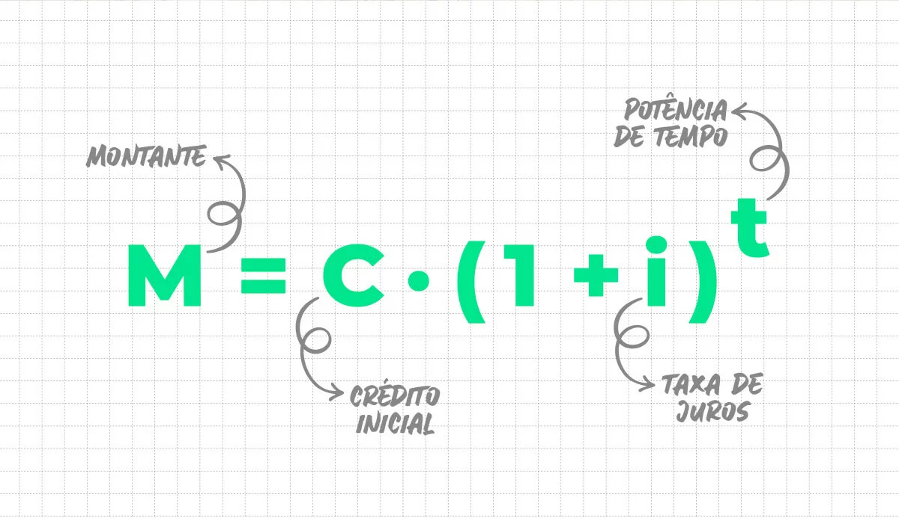

entendo juros compostos
Os juros compostos são uma forma de cálculo de juros em que a taxa de juros incide não apenas sobre o capital inicial, mas também sobre os juros acumulados ao longo do tempo. Em outras palavras, os juros compostos geram ganhos não apenas sobre o principal investido, mas também sobre os juros já incorporados ao montante total. Ao contrário dos juros simples, que são calculados apenas sobre o valor inicial do investimento, os juros compostos têm um efeito multiplicador, permitindo que o montante total cresça de maneira mais acelerada. Esse processo cria uma curva de crescimento exponencial, tornando os juros compostos uma ferramenta poderosa para o crescimento do capital ao longo do tempo.
